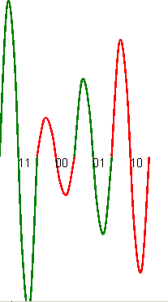
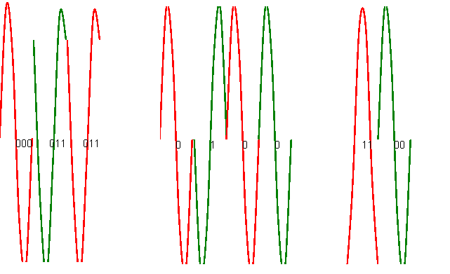
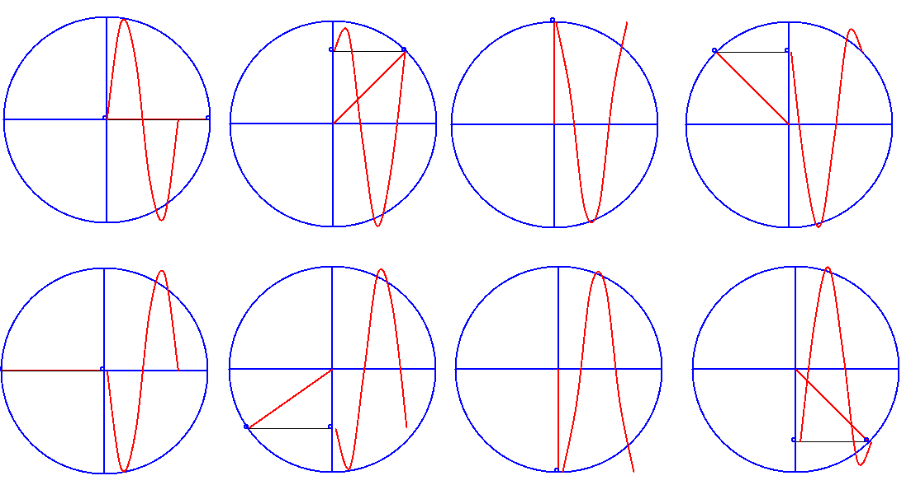
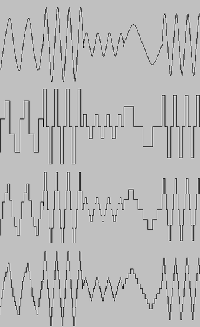

¿Ventajas de la comunicación instantánea?
Un inconveniente de muy alto nivel es el de la privacidad.
Es como un blog sonoro. Consiste simplemente en la difusión de charlas o audio por medio de ficheros de sonido.
Sus ventajas son esencialmente las mismas que las de los blogs.
Un wiki es una página web modificable por cualquiera (o por casi cualquiera). Al sumar el esfuerzo de muchas personas se puede obtener información muy completa y de muy alta calidad. El inconveniente es que puede haber "vandalismo".
La enseñanza a distancia se ha visto reforzada y mejorada por las redes de datos. Es mucho más sencillo proporcionar información académica, tutorías, ejercicios, exámenes y demás mediante el uso de ciertos programas.
Que en una hipotética comunicación siempre se debe empezar por tener unas reglas comunes que todo el mundo respeta. A pesar de que se envíe una información nunca hay garantías de que llegue, puede que sea necesario reenviarla.
Además, es muy posible que también haya que tener mecanismos para mejorar la eficiencia de la comunicación.
Las redes de datos se basan en una jerarquía. Cada miembro de la jerarquía solo conoce un pequeño conjunto de la información total. Al colaborar todas juntas, se consigue el trasiego de información entre puntos muy lejanos.
En esencia, la funcion de las redes es transportar datos de un sitio a otro. Para ello, pueden utilizar mecanismos muy diversos. Sin embargo, casi todos los mecanismos suelen basarse en los mismos principios.
Hay dispositivos que no son de uso directo pero son necesarios, como los router.
Los inalámbricos son más inestables e inseguros pero dan soporte a usuarios móviles. Entre ellos, hay muchas diferencias en cuanto a la capacidad en relación con la distancia.
Acuerdos establecidos que los fabricantes respetan con el fin de garantizar la interoperabilidad.
Los mensajes en las redes de datos pueden ser convertidos a distintos medios muchas veces, sin embargo todos los dispositivos pueden volver al formato original de forma que se pueda recuperar la información.
La tendencia actual es utilizar redes IP para todos los servicios que hay o que pueda haber. Se denomina red convergente a aquella en la que tienen cabida todos los tipos de servicios que se basan en una única infraestructura.
Las redes informáticas se han construido en base a una serie de principios básicos:
Es la capacidad de la red para recuperarse automáticamente de fallos en determinados puntos de la red.¿Como se consigue?. Por medio de enlaces redundantes que permiten tomar varios caminos a un mismo destino.
Es la capacidad para aumentar de tamaño o prestaciones sin que el conjunto del sistema se vea ralentizado o degradado.¿Como se consigue?. Se consigue haciendo que el diseño no implique el uso de puntos centrales.
Es la garantía de que la red ofrece el mejor servicio posible. ¿Como se consigue?. Forzando el uso de protocolos que fomentan la colaboración entre máquinas.
Es la certeza de que la información es procesada solo por quien corresponde.¿Como se consigue?: Mecanismos de cifrado.
Una red de paquetes se basa en que todo mensaje se trocea. Cada trozo se envía y procesa por separado. Si un paquete se pierde, se reenvía solo ese paquete. Esto permite que:
Se basan en que una vez que un usuario inicia una comunicación el cable (o circuito) es para él solo, aunque no lo aproveche al 100%
Significa que hay un orden en cuanto a la organización de los participantes en la red. Este orden suele ser así:
Un estándar es una norma cuyo cumplimiento ayuda a la interoperabilidad. Los estándares suelen ser gratuitos y cualquiera puede ceñirse a ellos. Los protocolos de Internet son publicos y gratuitos.
El hecho de que los estandares sean comunes ha dado lugar a muchisima competencia y por tanto un mayor desarrollo de Internet.
El desarrollo de protocolos o estandares es un proceso abierto a la comunidad. CUALQUIERA PUEDE INTENTAR MEJORAR UN PROTOCOLO O HACER UNO NUEVO.
Este mecanismo es muy bueno, porque lo unico que se verifica es que un protocolo sea tecnicamente superior, sin importar de donde viene.
Las redes hoy en dia transportan trafico de muchos tipos. No todo el trafico es tiene los mismos requisitos: existen mecanismos para intentar que todo el mundo obtenga lo que necesite.
¿Por qué las redes deben ser seguras?.
Hay otros factores ligados a lo económico. (Phishing). En cualquier caso lograr un cierto grado de seguridad sí es posible. Para ello es muy recomendable utilizar mecanismos de cifrado.
La integridad es la propiedad que "garantiza" que un mensaje no ha sido modificado por error técnico o humano.
En general, para tener la máxima disponibilidad en una red, se suele recurrir a la redundancia, es decir, disponer de más de un mecanismo o dispositivo para que funcione como respaldo del principal.
Las máquinas digitales utilizan señales eléctricas para la comunicación. El sentido habitual de los términos utilizados es el siguiente
Esto da lugar a un problema: las personas utilizan numeración basada en 10 cifras (del 0 al 9). Es necesario establecer mecanismos de conversión
Nos dan una cifra como 156 (en base 10) y queremos conocer la representación que hace la máquina (en base 2, en binario)
El procedimiento consiste en ir dividiendo entre dos hasta que no podamos seguir. Despues, se toma el último cociente y todos los restos de final a principio. Esa secuencia de 0 y 1 es el número binario buscado
| 156:2 | Cociente: 78 | Resto: 0 |
| 78:2 | Cociente: 39 | Resto: 0 |
| 39:2 | Cociente: 19 | Resto: 1 |
| 19:2 | Cociente: 9 | Resto: 1 |
| 9:2 | Cociente: 4 | Resto: 1 |
| 4:2 | Cociente: 2 | Resto: 0 |
| 2:2 | Cociente: 1 | Resto: 0 |
Tomamos el último cociente y el último resto y escribimos los restos leyéndolos hacia arriba
10011100 es en binario el número decimal 156
Ejercicio 195 en base decimal necesita ser convertido a binario
195:2 Cociente: 97 Resto: 1 97:2 Cociente: 48 Resto: 1 48:2 Cociente: 24 Resto: 0 24:2 Cociente: 12 Resto: 0 12:2 Cociente: 6 Resto: 0 6:2 Cociente: 3 Resto: 0 3:2 Cociente: 1 Resto: 1
El resultado es 1100.0011
Ejercicio 231 debe pasarse a binario
231:2 Cociente: 115 Resto: 1 115:2 Cociente: 57 Resto: 1 57:2 Cociente: 28 Resto: 1 28:2 Cociente: 14 Resto: 0 14:2 Cociente: 7 Resto: 0 7:2 Cociente: 3 Resto: 1 3:2 Cociente: 1 Resto: 1
La solución es 1110.0111
Ejercicio propuesto 466 debe pasarse a binario (El resultado debe ser 0001.1101.0010)
Hacer las siguientes conversiones
Para hacer el proceso inverso debemos escribir las potencias de 2 encima de los bits. Estas potencias se escriben de derecha a izquierda y empezando por 0.
Después se multiplican los bits por las potencias, y estas multiplicaciones se suman. Se debe recordar que algo elevado es 1
Si por ejemplo, nos dan la secuencia 101011, el proceso es el siguiente
| 2^5 | 2^4 | 2^3 | 2^2 | 2^1 | 2^0 |
| 1 | 0 | 1 | 0 | 1 | 1 |
2^5 + 2^3 + 2^1 + 2^0 = 32 + 8 + 2 + 1 = 43
Otro ejemplo: Convertir 1001.0011
| 2^7 | 2^6 | 2^5 | 2^4 | 2^3 | 2^2 | 2^1 | 2^0 |
| 1 | 0 | 0 | 1 | 0 | 0 | 1 | 1 |
2^7 + 2^4 + 2^1 + 2^0 = 128 + 16 + 2 + 1 = 147
El sistema hexadecimal trabaja con 16 símbolos: 0, 1, 2, 3, 4, 5, 6, 7, 8, 9, A, B, C, D, E, F
Se debe tener presente que los símbolos A-F tienen valores internos como estos:
Para convertir de decimal a hexadecimal debemos dividir por 16 hasta que no se pueda más. Despues se toma el último cociente y todos los restos desde el final hasta el principio.
¡CUIDADO!: LOS RESTOS DE LAS DIVISIONES TENDRÁN VALORES COMO 0, 1...7, 8, 9, 10, 11, 12, 13 14 O 15.CUANDO UN RESTO SEA 10, 11, 12, 13, 14 O 15 ESCRIBIREMOS LOS SÍMBOLOS A(10), B(11), C(12), D(13), E(14) O F(15)
| Paso 1 | 65535 : 16 4095 y resto 15 |
| Paso 2 | 495: 16 255 y resto 15 |
| Paso 3 | 255:16 15 y resto 15 |
| Paso 4 | 15:16 0 y resto 15 |
65535 EN HEXADECIMAL ES FFFF
Al igual que antes, se utilizan potencias y sumas. El proceso es exactamente el mismo: se ponen las potencias arriba, de derecha a izquierda, se multiplican y se suman. Sin embargo hay un par de diferencias
Ejemplo: Convertir a decimal FFFA
| 16^3 | 16^2 | 16^1 | 16^0 |
| F | F | F | A |
Esto es
| Paso 1 | F*(16^3) + F*(16^2) + F*(16^1) + A*(16^0) |
| Paso 2 | F*(4096) + F*(256) + F*(16) + A*(1) |
| Paso 3 | 15*(4096) + 15*(256) + 15*(16) + 10*(1) |
| Paso 4 | 61440 + 3840 + 240 + 10= 65530 |
4.5 Conversión de hexadecimal a binario y viceversa
Para efectuar estas conversiones se necesitan hacer una tabla binaria. Una tabla binaria se construye poniendo 1 y 0 de forma alternativa y en bloques de 0, 1, 2, 4, 8, 16... (en potencias de 2)
| 0 | 0 | 0 | 0 | 0 |
| 0 | 0 | 0 | 1 | 1 |
| 0 | 0 | 1 | 0 | 2 |
| 0 | 0 | 1 | 1 | 3 |
| 0 | 1 | 0 | 0 | 4 |
| 0 | 1 | 0 | 1 | 5 |
| 0 | 1 | 1 | 0 | 6 |
| 0 | 1 | 1 | 1 | 7 |
| 1 | 0 | 0 | 0 | 8 |
| 1 | 0 | 0 | 1 | 9 |
| 1 | 0 | 1 | 0 | A |
| 1 | 0 | 1 | 1 | B |
| 1 | 1 | 0 | 0 | C |
| 1 | 1 | 0 | 1 | D |
| 1 | 1 | 1 | 0 | E |
| 1 | 1 | 1 | 1 | F |
Si queremos convertir de hexadecimal a binario el numero C2D7 solo tenemos que convertir elemento a elemento por bloques de 4 bits.
Para convertir desde binario a hexadecimal tenemos que coger los bits de 4 en 4 y empezando por la derecha. Despues cada bloque de 4 bits, se convierte por el elemento de la derecha de la tabla binaria
Por ejemplo, para convertir 1001010010 a hexadecimal tengo que dividir asi: 10.0101.0010. Si un bloque se queda aislado por la izquierda, se pueden añadir ceros para completar hasta 4 bits. El numero binario queda 0010.0101.0010. En informatica, el proceso de rellenar se llama tambien "padding".
Haz las siguientes conversiones
01.1001.0110 a decimal Bits 8 7 4 21
2**8 + 2**7 + 2**4 + 2**2 + 2**1 256 + 128 + 16 + 4 + 2=406
1875 esta en decimal y hay que pasarlo a binario
Lo vamos a convertir primero a hexadecimal
Solución:
103221 en binario es 0001.1001.0011.0011.0101
| A | 1 | B | 2 | C | 3 |
| 1010 | 0001 | 1011 | 0010 | 1100 | 0011 |
1001.1111.0000.1101.1111 a decimal
Convierto primero a hexadecimal
| 1001.1111.0000.1101.1111 | ||||
| 9 | F | 0 | D | F |
Y ahora convertimos a decimal 9*16^4 + 15*16^3 + 13*16^1 + 15*16^0 = 651487
Toda red tiene un conjunto de elementos que interoperan entre ellos.
Supongamos que una máquina con XP desea enviar un mensaje como "Hola" a través de Internet a una máquina que usa Linux.
En general, en cualquier red informática la información se envía troceada. Este troceado se denomina "segmentación".
Al trocear la información podemos "compartir" líneas de forma que cada uno la utilice "un poco". Este compartición se denomina multiplexación. Para que todo funcione correctamente es imprescindible que cada trozo o segmento lleve una numeración o marca que lo identifique y que permita al receptor reconstruir el mensaje inicial.
Son los elementos físicos que intervienen en la comunicación: router, módem, switches, proxies....
Son programas que se ejecutan en un hardware con el fin de ofrecer un servicio. Ej: DNS, TCP/IP
En los componentes software, no todos los elementos actúan de la misma manera.
Se denomina dispositivos intermediarios a todos aquellos que no están bajo nuestro control pero que efectúan tareas de encaminamiento de la información.
Se puede usar el comando tracert www.google.com (o cualquier otro sitio) para verificar si un problema está en nuestra red o no.
Estos dispositivos intermediarios pueden tomar decisiones en cuanto a los caminos más apropiados para enviar un segmento a su destino. También son capaces de solicitar retransmisiones y detectar errores.
Los medios, que eran elementos pasivos, se pueden clasificar en tres grandes tipos.
El cobre es un "relativamente bueno" conductor de electricidad. Así, podemos enviar 1 y 0's a lo largo de un cable de cobre por medio de impulsos eléctricos.
Se basa en conducir impulsos lumínicos. Debido a que la luz es el elemento más rápido conocido la velocidad que alcanzan estos cables suele ser mucho mayor. El problema de la fibra es el coste.
Hay dos formas de usar fibra:
El estándar más popular es Wi-Fi. Permite una comodidad mayor para el usuario. El problema de las redes inalámbricas es doble: la seguridad y el otro la variabilidad de la señal.
A la hora de elegir un medio para nuestra red se deben tener en cuenta estos tres factores
Es una red de alcance pequeño: una sala o un edificio.
Un barrio o una ciudad
Cubren áreas geográficas muy grandes: países e incluso continentes. Los proveedores de servicios internet o Internet Service Providers son los únicos que implantan redes de área amplia. Con ello, ofrecen sus servicios a usuario locales que desean estar interconectados con otros usuario.
Internet es el resultado de interconectar redes aisladas. El hardware necesario lo proporcionan las compañías de teléfono. El software de IP ES GRATIS.
En Internet cada uno puede hacer lo que quiera DENTRO DE SU LAN. La conexion al exterior de esa LAN es del proveedor. En ese punto "fronterizo" se deben respetar todos los estándares. El hecho de que sea el software el principal "pegamento" de distintas redes es lo que permite que un usuario con conexión inalámbrica se conecte con uno que usa ADSL en otro punto del mundo cruzando distintos tipos de línea.
Es una red privada de una compañía que usa Internet. Normalmente, para ver documentos o archivos de esa empresa será necesario un usuario y una contraseña.
Un protocolo es un conjunto de reglas que hay que respetar para conseguir que la comunicación funcione.
Los protocolos de red necesitan poner de acuerdo a las máquinas en cosas como:
A menudo, los protocolos no se han diseñado de forma aislada. Es más frecuente que los protocolos se diseñen e implementen como un conjunto. Por ejemplo, TCP/IP son solo dos protocolos de una familia.
Hay dos grandes familias de protocolos: OSI y TCP/IP
En una familia de protocolos hay distintas funciones. Esto se debe a que la comunicación es una tarea MUY compleja. Para hacerlo más sencillo, se divide la tarea en subtareas.
En OSI los protocolos se organizan en "capas". La idea subyacente es que podamos cambiar capas fácilmente. En OSI hay 7 capas.
| Aplicación |
| Presentación |
| Sesión |
| Transporte |
| Red |
| Enlace |
| Física |
Se encarga de las normas sobre forma de los conectores, voltajes en los cables
Se encarga de regular los envíos de datos entre vecinos inmediatos. Por ejemplo, en las redes locales Ethernet el enlace utiliza segmentos de 1500 bytes. Otro ejemplo es que en la capa de enlace se pueden enviar datos y despues el receptor debe CONFIRMARNOs de alguna forma que los datos llegan.
Regula la transmisión entre vecinos lejanos. Un ejemplo de elemento regulado son las direcciones que todo el mundo debe tener.
Se ocupa de que una misma conexión se pueda usar por muchos programas en el mismo ordenador. La capa de transporte permite multiplexar el cable por medio de una numeración especial que llamamos "puertos".
Regula los procedimientos para iniciar y cerrar conexiones: uso de contraseñas, cifrados, tarificación.
Que regula cosas como ¿qué número se va a utilizar para representar cada letra?. Por ejemplo, la A usará el código 65
Son los programas que utiliza el usuario final. Se regulan cosas como intercambio de archivos, de páginas HTML
Es más sencillo. Elimina diversas capas y triunfó gracias a que funcionó desde el primer momento y a que era gratuito.
| Aplicación |
| Transporte |
| Interred |
| Física |
TCP/IP NO REGULA NADA DE CAPA FÍSICA
Es una mezcla de la de red y enlace OSI. El protocolo más usado es IP
El protocolo más usado es TCP y despues UDP. Se encarga de lo mismo que la de transporte OSI.
Dan libertad a los programadores de aplicaciones para que creen sus propios protocolos.
Los protocolos en las redes son independientes del tipo de medio físico, cable, pulso EM o lo que sea. Es así porque si en el futuro aparecen tecnologías nuevas podría ocurrir que los protocolos quedasen obsoletos junto a los viejos "cables".
Los modelos basados en capas son muy populares, pero ¿por qué diseñar software basándonos en esta arquitectura?. Hay varias razones
Encapsulación es el proceso por el cual las capas cogen datos de sus capas vecinas SIN MIRAR PARA NADA LO QUE HAY. Procesan dichos datos y añaden la información necesaria para los destinatarios. La idea es tratar la información que llega como una cápsula que no podemos abrir ni tocar.
En relación con esto se definen distintas PDU. Una PDU es una "Protocol Data Unit" o "Unidad de datos de protocolo". Cada capa recibe una PDU (o bloque), la toma, le añade lo que sea necesaria y eso se convierte una PDU nueva que se pasa hacia abajo. Los distintos nombres de las PDU son estos
Cada PDU tiene su propia información especial: por ejemplo los segmentos necesitan los números de puerto, los datagramas necesitan las IP de origen y destino.
Cada capa puede tener su propia dirección especial. Es importante recalcar que las direcciones NO VAN ASOCIADAS A LOS EQUIPOS, sino a SUS CONEXIONES. Por tanto, si un equipo tiene varias tarjetas, podría tener varias direcciones.
Algunos ejemplo de direcciones serían los siguientes
Es la única capa que no es software sino elementos físicos. En general tenemos tres grandes categorías de medios físicos
La capa física se encarga de transportar bits convirtiéndolos primero al tipo de señal correspondiente al medio físico y luego extrae de esos medios físicos los bits.
Esta tarea requiere de varios elementos:
Se llama señalización al proceso de conversión de una secuencia de bits en una secuencia de impulsos.
Se llama modulación al proceso de modificación de una señal para que transporte bits. Toda señal tiene una amplitud y una frecuencia. Se llama Amplitud al punto más alto (o bajo) de una señal. Se llama frecuencia al número de ondas completas que transcurren en un segundo.
Tanto la amplitud como la frecuencia se pueden modular lo que nos lleva a los dos procesos fundamentales de modulación: AM y FM
La modulación en amplitud permite alcances mucho mayores y se basa en la alteración de la amplitud o altura de la señal
Utilizando lápiz y papel dibuja la señal generada utilizando un esquema de modulacion AM de 4 señales que envíe la cadena de bits 0111.0010
Solucion
La creación de señales tiene una serie de principios básicos:
Utilizando un esquema de 2 bits enviar la cadena 00100101
Utilizando un esquema de 3 bits enviar la cadena 101001011
Utilizando un esquema de 4 bits enviar la cadena 0010010101101
La modulación FM es un mecanismo basado en modificar el número de ondas por tiempo.
Solo hay que elegir un esquema de codificación basándonos en el número de ondas. P.ej:
La modulación en fase se basa en modificar el punto en el que empieza una onda. Al final, todas las ondas empiezan y acaban en el mismo punto y además todas pasan por el punto más alto y por el punto más bajo.
Se debe tener en cuenta que en todos los mecanismos de modulación se cumple la misma regla:"Cuantos más estados de modulación (divisiones) más bits por onda y por tanto más velocidad. Sin embargo, las señales se vuelven mucho más complicadas de entender y de generar" Esto se ilustra en la imagen donde se ven la emisión de bits. Es estas emisiones pueden meterse muchos bits por onda, o muy pocos.
Dibujar las fases y comprender como funcionan puede ser complejo. Para facilitarlo se muestran en la figura siguiente unas ilustraciones explicativas en las que se pueden ver como el ángulo de "desfase" marca el punto donde la onda empezará y terminará así como si empezará subiendo o bajando. Mirando los dibujos de derecha a izquierda y de arriba a abajo se pueden ver las ondas con desfases de 0, 45, 90, 135, 180, 215, 270 y 315 grados. Como se puede apreciar, este esquema, al utilizar 8 ondas posibles puede enviar grupos de 3 bits de una sola vez. Si se desearan enviar grupos de 4 bits por onda habría que "dividir" el círculo en 16 fases utilizar cada una de ellas para enviar 0000, 0001, 0010, 0011, ..., 1110 y 1111
En la vida real, es muy extraño encontrar dispositivos que solo usen AM, FM o PM. Lo más normal es que se combinen varios mecanismos para intentar aprovechar las ventajas de cada uno ellos.De hecho, se pueden combinar los tres sistemas a la vez mezclando modulación de frecuencias, fases y amplitudes
En un sistema que combinara 2 niveles de AM con dos de FM tendríamos cuatro posibles formas de onda
Para el próximo día se propone crear el esquema que combina 4 fases, 2 frecuencias, 4 alturas.
Se dice que una señal es analógica cuando se acepta que tome cualquier valor en un intervalo dado. Una señal es digital cuando solo se aceptan ciertos valores de la señal. La señal digital más básica es aquella que solo utiliza dos niveles correspondientes a los bits 0 y 1.
Las señales analógicas emitidas no pueden ser procesadas "demasiado bien" por el receptor, ya que al fin y al cabo pueden ocurrir muchas cosas que alteren la señal de forma que el receptor no pueda saber la forma original de la señal
Sin embargo, las señales digitales pueden ser procesadas por el receptor y reconstruidas al saber que no todo es posible, por lo tanto la señal original se puede reconstruir "casi" a la perfección. Aún así se debe tener en cuenta que cuando una señal analógica se convierte a digital se pierde información. La imagen siguiente muestra como una señal analógica original se ha muestreado utilizando menos o más bits de forma que la señal digitalizada puede ser menos o más fiel a la original. Sin embargo, más fidelidad requiere más memoria.
Cuando alguien envía una señal digital, surge un problema importante. ¿Donde empieza y acaba un bit?.
Para resolver este problema hay dos soluciones:
Una transmisión en serie es una transmisión/recepción que solo utiliza un cable. Los datos se envían uno tras otro. Se ahorra cobre pero la velocidad es más pequeña.
Una transmisión en paralelo utiliza muchos cables a la vez para enviar muchos bits a la vez. Se utiliza más cobre pero la velocidad se multiplica.
La codificación es el mecanismo por el cual un flujo de datos se convierte en una secuencia de unos y ceros. Por ejemplo, una secuencia como 011 puede que se envíe dentro del cable como 01011.
¿Por qué se hace esto?
¿Como funciona la codificación de bloques en los CD?
Un estándar es una norma: dicha norma puede ser obligatoria o recomendable. En el primer caso se dice que es "de iure" y en el segundo "de facto".
Algunos países imponen normas a las transmisiones dentro de su territorio y en otros casos los fabricantes deciden adoptar un sistema común con el fin de tener interoperabilidad.
Las tarjetas de red siguen casi al 100% el estándar Ethernet ("de facto").
En España el organismo regulador es AENOR (pertenece a la ISO)
Hay otros estándares internaciones emitidos por otros organismos como el IEEE (Institute of Electrical and Electronic Engineers). Algunas de las normas que emite el IEEE son seguidas en todo el mundo, como por ejemplo las normas de la serie IEEE 802.11 (wi-Fi).
En relación con esto hay otros estándares como los de IEEE 802.3 (Ethernet).
a) Ancho de banda: Todo medio tolera una frecuencia mínima y una máxima. La diferencia entre los dos es el ancho de banda. ¡Esto significa que el ancho de banda es una medida de capacidad y no tiene por qué ser la velocidad máxima!. De forma similar a una tubería de agua, el ancho de banda es el ancho del tubo, y no la velocidad del agua dentro del tubo. El ancho de banda se mide en potencias de 10, y no de 2. Es decir 10Mbps son 10^6 bits por segundo Un GByte de RAM son 1024 Megas, pero 1Gbps son 1000 Mbits.
b)Throughput: Productividad. Esto se mide en porcentaje. Es una medida del uso real de una conexión. Se debe recordar que al enviar algo, cada capa añade información, y esa información consume ancho de banda. El throughput nos indica el porcentaje real que se usa para enviar nuestra información y no la de las cabeceras. Si genero 1000 bytes, mi máquina enviará esos 1000 bytes + 30 bytes de direcciones y otras cosas, por lo que tengo una productividad de 1000/1030. La productividad se mide en porcentaje y a veces también se llama "rendimiento".
| 10 | Base | T |
| Ancho de banda (Mbps) | Emite en banda base | Par trenzado |
El cable de par trenzado utiliza parejas de cables entrelazados para reducir las interferencias mutuas debidas al magnetismo. El fenómeno por el cual dos cables se interfieren mutuamente debido a los campos magnéticos de cada uno se llama "diafonía".
Por otro lado, se dice que un cable emite en banda base cuando solo utiliza una señal en el canal. Sin embargo, cuando se meten dos o más señales en un mismo canal se dice que la banda es "ancha".
| 100 | Base | T |
| Ancho de banda (Mbps) | Emite en banda base | Par trenzado |
| 1000 | Base | T |
| Ancho de banda (Mbps) | Emite en banda base | Par trenzado |
| 10 | Base | F |
| Ancho de banda (Mbps) | Emite en banda base | Fibra óptica |
Se puede poner en entornos industriales, con maquinaria pesada, etc.. sin sufrir interferencias.
| 100 | Base | C |
| Ancho de banda (Mbps) | Emite en banda base | Coaxial |
Tiene cierta tolerancia a las interferencias.
En general, todos ellos tienen un tamaño máximo de segmento. Es decir, el cable que va de un equipo a otro no puede ser mayor de cierta longitud. Esta longitud oscila entre los 100 m y los kilómetros.
Muy poco alcance y muy poca velocidad: 56-64 kbps. Pensada para dispositivos de todo tipo que se conectan uno con uno, y no uno con muchos.
Redes de muy gran alcance (80km) y con una velocidad media de 50-100 Mbps.
Son impulsos cuyo longitud de onda está justo por debajo de lo que ve el ojo humano. Pueden obtener bastante velocidad pero el alcance es muy bajo. Además, es absolutamente necesario que los dispositivos se vean físicamente (uno enfrente del otro).
La señal de infrarrojos se ve muy afectada por el calor ambiental, que siempre está presente. De ahí, que al alejar los dispositivos la velocidad o incluso el funcionamiento se vean afectados.
Se denomina Wi-Fi a una tecnología que utiliza frecuencias en torno a los 2,4 Ghz y que está pensada para redes domésticas. Esta clase de señales con frecuencias tan altas permiten velocidades de un rango aceptable para un ordenador (alrededor de 54 Mbps).
Las señales del rango Wi-Fi se ven muy afectadas por la humedad ambiental.
High Speed Downlink Packet Access (Acceso a una red de paquetes con enlace de bajada de alta velocidad). HSDPA utiliza unas frecuencias que permiten alcances bastante grandes (50-80 km) y velocidades de hasta 14 MBps. Está pensada para ser ofrecida por compañías de telefonía móvil.
También se conoce como "Internet por UMTS" (Universal Mobile Telephone System).
HSDPA utiliza las distintas frecuencias asignadas para descargar pero de una forma distinta a sistemas como GPRS. Tradicionalmente la transmisión se ha hecho reservando frecuencias a los distintos participantes de una red. Este sistema se llama FDMA (Frequency Division Multiple Access o acceso múltiple mediante división de frecuencias).
Sin embargo HSDPA asigna una misma banda a todo el mundo. Para evitar el solapamiento de datos cada dispositivo tiene un código asignado que se envía junto con sus datos. Este sistema de asignación de códigos se llama WCDMA (Wideband Code Division Multiple Access o acceso múltiple por división de códigos en (redes de) banda ancha)
En general en todas las instalaciones nos vamos a encontrar cable de cobre de par trenzado no apantallado.
El cable de par trenzado se denomina de 8 vías por tener 8 pequeños cables de colores en su interior. No es igual que el del teléfono (que tiene 4).
Para montar un cable es importante saber que los pequeños cables del interior siempre van en el mismo orden. Al montar los cables dentro de los conectores se debe hacer lo siguiente
Se debe poner el conector con los pin metálicos mirando hacia nosotros. Los pin se conectan de izquierda a derecha del 1 al 8. Hay 8 cables cuyos colores son los siguientes
Crimpadora 20-45 Euros Pelacables 8 euros
Punta 1
| Tx+ | Tx- | Rx+ | Rx- | ||||
| 1 | 2 | 3 | 4 | 5 | 6 | 7 | 8 |
| Bl/N | N | B/V | A | B/A | V | B/M | M |
Punta 2
| Tx+ | Tx- | Rx+ | Rx- | ||||
| 1 | 2 | 3 | 4 | 5 | 6 | 7 | 8 |
| Bl/N | N | B/V | A | B/A | V | B/M | M |
Se puede crear un tipo de cable que se denomina cruzado poniendo en una punta del cable los colores que hemos dicho y en la otra modificando el orden.
Punta 1
| Tx+ | Tx- | Rx+ | Rx- | ||||
| 1 | 2 | 3 | 4 | 5 | 6 | 7 | 8 |
| Bl/N | N | B/V | A | B/A | V | B/M | M |
Punta 2
| Rx+ | Rx- | Tx+ | Tx- | ||||
| 1 | 2 | 3 | 4 | 5 | 6 | 7 | 8 |
| Bl/V | V | B/N | A | B/A | N | B/M | M |
En salas de ordenadores es normal que los cables no vayan directamente del PC al switch, sino que haya conexiones intermedias con el fin de ofrecer flexibilidad en la organización de la sala. Los paneles de parcheo y las rosetas permiten ampliar la red o modificar la organización con cierta
El cable de cobre es sensible a los campos electromagnéticos debido a un fenómeno llamado inducción. Estas interferencias pueden provenir de muchos sitios: máquinas, cables eléctricos e incluso de otros cables de datos. Cuando dos cables de datos se hacen interferencia mutua se denomina al resultado como "diafonía" (conversaciones cruzadas) o en inglés "crosstalk"
Un cable(s) mal hechos podría llegar a ser un posible origen de foco de incendio. Cerca de toda instalación eléctrica debería haber extintores.
Hay extintores para distintos usos:
La fibra óptica utiliza a menudo luces láser de alta intensidad que pueden quemar la retina.
El cable Shielded Twisted Pair (par trenzado apantallado) es como el UTP (par trenzado no apantallado) con la salvedad de que dispone de un revestimiento extra de aluminio para proteger de interferencias EM.
El inconveniente de dicho cable es que su precio es superior al UTP
Es bastante robusto, lleva protección metálica, su velocidad es similar, pero sin embargo no ha sido elegido por la industria. Esto se debe a que es menos versátil que el par trenzado.
La fibra óptica es muy rápida, pero bastante compleja de montar. Hay dos tipos de fibra: monomodo y multimodo
Utiliza una sola luz que circula en línea recta. Al ir en línea recta, la luz NO SE DISPERSA y se pueden conseguir las mayores velocidades. Sin embargo, se necesita una luz láser (que es más cara)
La luz se dispersa. Eso conlleva que las velocidades son un poco menores. Sin embargo, al permitir la dispersión podemos usar luces LED (más baratas)
La capa de enlace es la capa 2 del modelo OSI. Se encargaba de "entregar datos entre vecinos inmediatos".
La capa de enlace tiene dos subtareas fundamentales:
Se llama "trama" a un bloque de datos manejado en la capa de enlace.
Se llama "medio físico" al sistema utilizado para la transmisión de bits (a veces será un cable de cobre, otras fibra óptica).
¿Por qué hace falta una capa de enlace?.
Respuesta: Hay muchos tipos de medios físicos. Cada uno de ellos tiene distintas características.
Por ejemplo, un enlace por satélite puede ser muy rápido, pero el comienzo de la transmisión puede ser muy lento (lo que llamamos "ping" o "latencia".)
Se podría decir que la latencia es la "aceleración de un coche" (por ejemplo, pasar de 0 a 100 en 4 o en 12 segundos). Sin embargo, la velocidad de una red es como decir que un coche puede ir de forma sostenida a 110 o a 190Km/h.
La capa de enlace, se preocupa de resolver los problemas de latencia y ancho de banda de los distintos medios que puede cruzar un paquete.
Cuando enviamos un email de aquí a Japón, ese email puede cruzar muchos tipos de redes (ver animación). Cuando el paquete llega por ejemplo a mi router, puede que mi router al ir conectado por fibra óptica a mi compañía decida confiar en el medio para así ir más deprisa. Sin embargo, al llegar ese email a un satélite, es posible que la capa de enlace de ese satélite decida activar todos los controles de errores para evitar problemas.
La regla general es que en función del medio que usemos, usaremos distintas capas de enlace adaptadas a las peculiaridades de ese medio, lo que supone que la capa de enlace incluso podría hacer cambios en el formato del mensaje (por ejemplo, cifrando, o haciendo trozos más pequeños o activando la comprobación de errores)
Para poder ver la estructura de tramas descargaremos e instalaremos el analizador de red Wireshark.
Toda la información que circula por una red tiene una estructura claramente determinada. El uso de determinadas conexiones implica el uso de distintos protocolos de enlace.
Las conexiones más utilizadas de lejos hoy en día son las basadas en par trenzado conectadas a tarjetas Ethernet.
Las normativas para construir tarjetas de red Ethernet son públicas y se denominan estándares de la serie 802.xxxx. Las tarjetas basadas en cable corresponden a la serie 802.3 y las Wi-Fi a la 802.11
A esta estructuración de la información se le llama entramado. En general, las tramas Ethernet tienen un esquema como este
| Destino | Origen | O | Datos | Trailer |
Los distintos enlaces (Wi-Fi, Ethernet, Fibra óptica...) utilizan distintas estructuras de trama. Esto supone que si un router tiene una conexión de fibra y una Ethernet, habrá que convertir un formato de trama en el otro.
Se denomina "método de acceso al medio" al procedimiento que ejecuta una capa de enlace para resolver el problema de la compartición de cables por parte de varios usuarios.
Hay muchos mecanismos MAC (Medium Access Control) pero el MAC elegido por Ethernet está basado fundamentalmente en el azar.
¿Qué campos hay en una trama?
Todas las capas de enlace suelen enviar marcas de inicio y final de trama, pero los sniffer no suelen mostrarlas.
Supongamos este mensaje
| Destino | Origen | C | Datos | Trailer |
| 0c-02-0a | 0b-0c-02 | H O L A |
Si convertimos los datos a números obtenemos cosas como por ejemplo * H: 73 * O: 84 * L: 76 * A: 65 * Sumando H+O+L+A= 298
La suma se mete en el tráiler y se envía esta trama
| Destino | Origen | C | Datos | Trailer |
| 0c-02-0a | 0b-0c-02 | H O L A | 298 |
Supongamos que el receptor recibe esto (se corrompe la O y se convierte en Q)
| Destino | Origen | C | Datos | Trailer |
| 0c-02-0a | 0b-0c-02 | H Q L A | 298 |
El receptor vuelve a calcular la suma
La suma que calcula el receptor no coincide con la enviada por el emisor. ¡Se ha descubierto un error!
Existen diversos protocolos y estándares para la capa de enlace, pero de lejos, el más utilizado es el sistema Ethernet
Ethernet utiliza direcciones de 6 bytes (48 bits). Además, los distintos fabricantes tienen asignados distintos bloques de forma que es posible conocer el fabricante de una cierta tarjeta
| 3 bytes | 3 bytes |
| Pref. fabricante | Dirección |
Un ejemplo de dirección Ethernet sería 00:22:CD:2A:5A:F1.
Se puede ver la dirección Ethernet de un equipo utilizando el comando ipconfig /all. A la dirección de enlace también se le conoce por el nombre de "dirección MAC" o "dirección física".
Al fabricar tarjetas, cada fabricante utiliza direcciones asignadas por un consorcio que centraliza la asignación de direcciones. ¡Nunca debería ocurrir que dos tarjetas tengan la misma MAC!.
En una red, siempre ocurre lo siguiente
Es decir, hay varios cables conectados a un mismo dispositivo. Todos los PC pueden enviar y/o recibir a la vez, entonces ¿como podemos resolver el tema de "quién utiliza el cable al exterior"?
Esta pregunta se puede resolver con distintos mecanismos. Estos mecanismos se llaman mecanismos de "CONTROL DE ACCESO AL MEDIO" (o Medium Access Control o MAC)
¿Qué posibles mecanimos podríamos utilizar? 1) Por turnos 1-2-3-1-2-3-1-2-3.... 2) Por prioridad 3) Por tipo de tráfico (primero HTTP y luego email) 4) Otros sistemas
Por curioso que resulte, el MAC en Ethernet se basa en el azar. Para enviar algo ocurre lo siguiente:
1.1) Si el cable está libre, envía (o recibe) 1.2) Si no está libre, espera
2.1) No hay ningún problema 2.2) Nuestra trama choca con otra (colisión) Una colisión es el resultado de la destrucción de dos tramas que se interfieren mutuamente.
Cuando hay una colisión, los que la sufren deciden esperar a que haya menos congestión, pero ¿cuanto hay que esperar?.
No se puede esperar un tiempo fijo, porque volveríamos a colisionar. Lo que ocurre es que las máquinas esperan un tiempo al azar, sin embargo el mecanismo es el siguiente
Ethernet se dice que es "no determinista" es decir no predetermina a nadie a una situación de envío o espera concretas
Se denomina símplex a un sistema en el cual una máquina solo recibe o solo transmite. Solo puede hacer una cosa.
Sistema en el cual uno emite y luego recibe, pero no hace las dos cosas a la vez.
Sistema en el cual los participantes pueden enviar y recibir simultáneamente.
No tiene nada que ver con los anteriores. Un switch o router se dice que tiene autonegociación cuando es capaz de detectar si hemos conectado un cable cruzado o uno directo o un switch o un PC.
Si al conectar dos dispositivos los dos tienen capacidades de negociación el orden de los colores de los cables pierde su importancia, ya que a nivel interno los dispositivos intercambian sus conexiones para que todo funcione correctamente.
Se denomina topología al orden en que se disponen los cables y los equipos. Las más utilizadas hoy en día son la siguientes
Es una topología en la que un nodo solo se conecta con otro nodo.
Es la utilizada en las tarjetas Ethernet. Estas tarjetas van conectadas a un dispositivo en el cual hay un cable que todas las tarjetas comparten y que se llama bus.
Los nodos están conectados de dos en dos formando un círculo. En la red se define un "sentido de giro". Así cuando alguien quiere enviar información a otro equipo, lo que hace es pasar el paquete al siguiente en la cadena de turnos.
En este esquema supongamos que los turnos son
A->B->C->D
D
+-------+ +-------+ | A | | C | +-------+ +-------+
B
Si A quiere enviar a D, se lo pasará a B. B, al ver que no es para él lo pasa al siguiente en la cadena. C, hará lo mismo y lo pasa al siguiente en la cadena. D, al recibirlo lo toma y se completa la transmisión.
Hoy en día, la fibra óptica utiliza anillos pero de dos en dos. Uno de los anillos se usa para enviar y el otro para recibir.
Una topología ya montada en una cierta estructura (por ejemplo, bus) puede reprogramarse para actuar como si fuera otra (por ejemplo, topología en anillo).
En estos casos diríamos que la topología FÍSICA es en bus, aunque hay una topología LÓGICA de anillo.
Ya hemos hablado un poco de las tramas. En las tramas hay una pregunta importante ¿por qué no se usa el mismo formato de tramas en todas las redes?
Respuesta: Porque no todas las redes son iguales. En una red de fibra, la fiabilidad es altísima y no necesitamos añadir mucha información de control de transmisión. Sin embargo, las redes basadas en satélites son muy inestables, por eso necesitan añadir muchas cosas para asegurar que todo llegue.
En la capa de enlace existen dos dispositivos básicos: hubs y switch.
Un hub es un dispositivo que reenvía todo lo que recibe. Esto no es muy eficiente ya que es muy fácil que dos máquinas generen colisiones en el resto de máquinas de una red.
Los switches no se comportan así. En primer lugar, tienen una memoria RAM y además tienen "capacidad de aprendizaje". Un switch siempre se fija en la MAC de origen. Si el switch no conocía esa MAC se la apunta y se apunta el puerto por donde vino.
En poco tiempo, el switch construye una tabla de MACs y puertos y es capaz de enviar los mensajes solo al destinatario correcto. Para ello, el switch analiza las tramas recibidas y se fija en la MAC de origen. Una vez que el switch ha aprendido las MAC de los PC que tiene conectados es capaz de hacer comunicaciones directas sin colisiones. Al ser capaz de ahorrar montones de colisiones, la comunicación con switches es muchísimo más eficiente.
Si llega información al switch que le diga que tiene que cambiar algo en la tabla, el switch lo hace
(Usuario->Administrador) enable (Administrador->Config. global) configure terminal (Cambia el nombre) hostname ejemplo (Config. global->Administrado) exit (Copiar config.) copy running-config startup-config reload
Switch>enable Switch#configure terminal Switch(Config)#line console 0 switch(config-line)#pasword pepito switch(config-line)#login switch(config-line)#exit switch(config)#exit switch#copy running-config startup-config switch#reload